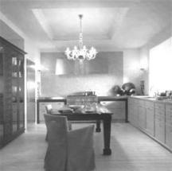

05-2014江苏，A

Never before had a Kitchen so much of a History
It tells of Freedom,Success,and of the Architecture of big American cities.Because that is where it started:in the second half of the 19th century!
Welcome to a new Era of Kitchen Interior Design
Back then,a Generation of successful American Entrepreneurs dreamt of a new style of Architecture to express their personal wealth.This dream was realized by young architects such as Daniel Burnham and Stanford White.They all had studied at the École des Beaux-Arts in Paris.And they created a new style for Architecture and Interior Design,named after the famous French Art Institute:Beaux-Arts.
SieMatic BeauxArts Breaks and Creates
In fact it was not a new style at all,but a composition of styles from different periods and cultures.Many world-famous structures such as the Chicago Art Institute and the Statue of Liberty account for it.But what does that have to do with your kitchen?Just as much as you want it to.Because in the same way that the anti-conventional architects back then took the freedom to combine elements from different historical eras,today,you too can break the conventional rules of style and create something new:your own personal composition of your kitchen.For that,SieMatic BeauxArts offers unique opportunities:A broad range of seemingly conflicting features that you combine to a harmonious design of your own.You can choose from menu of various forms,appealing colors,and precious materials,to create an environment that is much more than just a kitchen:a reflection of your personality.
全部题目与逐题讲解
- A.It helped display their money status.
- B.It was created by famous architects.
- C.It was named after a famous institute.
- D.It represented the 19th century urban culture.
查看答案与讲解
答案：A
1.A 细节理解题。根据文章第二段第一句Back then,a Generation of successful American Entrepreneurs dreamt of a new style of Architecture to express their personal wealth.并结合下文可知,BeauxArts style吸引美国企业家的原因主要是它能帮助他们显示自己的财富和地位。故选A项。
- A.Its designs are anti-conventional.
- B.Its designs come from famous structures.
- C.Its customers can enjoy their own composition.
- D.Its customers can choose from various new styles.
查看答案与讲解
答案：C
2.C 推理判断题。根据文章第三段倒数第一句和倒数第二句可知,SieMatic BeauxArts的独特之处在于它向客户提供了根据个人需要进行选择的机会,从而满足了客户展示自己个性的需要。故选C项。
本篇暂无未重复外刊。